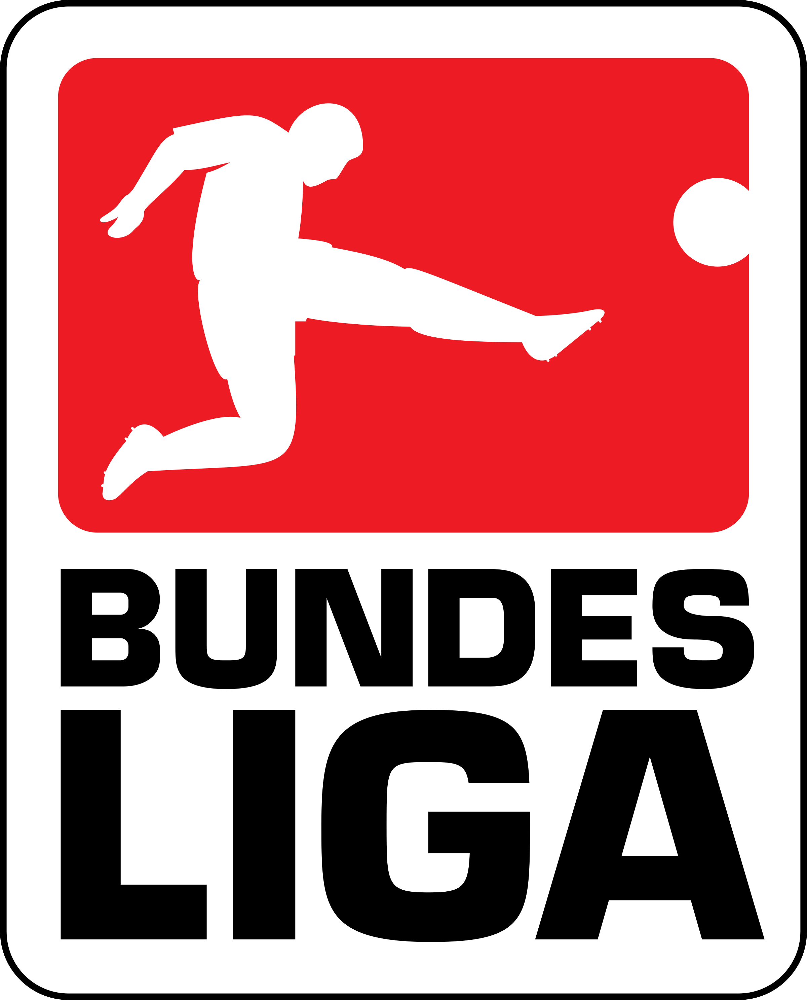

Borussia Dortmund
Borussia Dortmund, which in its complete form stands for Ballsportverein Borussia 09 e.V Dortmund, is a world-famous soccer club founded in 1909 based in Dortmund, Germany. The soccer club is best known for its professional team, which plays in the german Bundesliga, which is the highest soccer league in Germany and has been established in 1963. The Bundesliga is ranked amongst the best three soccer leagues in the world. The best three leagues, in that order, are
- The Premier League (England)
- The Bundesliga (Germany)
- La Liga (Spain)
The club won eight league championships, five DFB-Pokals, one UEFA Champions League, one Intercontinental Cup, and one UEFA Cup Winners' Cup. The club offers a big variety of different sports to be played and watched, such as handball or E-sports, yet the biggest part of the club is soccer.
Borussia Dortmund, also called BVB, is a very tradition and history-rich club that amazes and entertains soccer fans in Germany but also all across the world. One of the reasons for the hype around this club is its slogan "True Love", which reflects emotions of fans and everybody involved inside or around the club all over the world. An additional reason for the popularity of Borussia Dortmund across the world are the numerous international game-trips and pre-season-trips that the first team does often multiple times in a year.
Borussia Dortmund's colours are black and yellow, giving the club its nickname "die Schwarzgelben". They hold a long-standing rivalry with Ruhr neighbours Schalke 04, who are located just about 20 miles away from Dortmund in Gelsenkirchen, Germany with whom they contest the "Revierderby". Since Borussia Dortmund and Bayern Munich are the biggest and most prominent soccer clubs in Germany, there has been established a rivalry between these teams too. The game between Bayern and Dotmund is called "Der Klassiker".
In terms of Deloitte's annual Football Money League, Dortmund was in 2015 ranked as the second richest sports club in Germany, and the 12th richest football team in the world. Moreover, under the directorship of Michael Zorc in the 2010s, Dortmund have cultivated a reputation for spotting and developing young talent, and have remained focused on developing a youth system for which they have become known and famous for soccer clubs and young talents all around the world. Playing for Dortmund has become a goal for many talented young players all over the globe because of the quality of training, advanced professionalism, and a vibrant and family-like club culture. They have also received plaudits for generally adhering to an attacking footballing philosophy.
The professional firt-team of Borussia Dormund plays its games in the stadium Signal Iduna Park , located right in the heart of Dortmund and the North-Rhine Westphalia region. Home games are almost always sold out and tickets on the famous south side of the stadium, which is called the Yellow Wall, are always sold out. If you want to find out more about more about the stadium and why it is under the most famous stadiums in Europe, chlick on the stadium page link !!